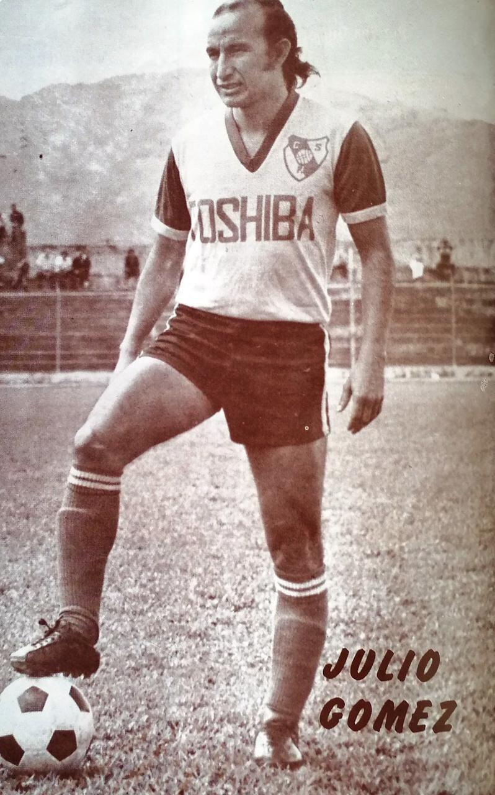

Multimedia exclusiva
Álbumes de fotos, cápsulas históricas y el archivo del club, solo para asociados.
Galería y Contenido Exclusivo
Revive los mejores momentos del Club con nuestra galería exclusiva y videos detrás de cámaras.
Música Rojiamarilla
Elegí tu canción y disfrutá del sonido del Team.
Álbumes de fotos
Cargando álbumes…
Trofeos en la Historia del Herediano
Un recorrido por los trofeos que el Team ha levantado a lo largo de su historia. Aquí ves los más recientes.
Cargando trofeos…
Cápsulas Históricas Exclusivas
Revive la grandeza del Team con nuestra colección de cápsulas audiovisuales exclusivas para socios.
En busca de Julio Gómez en el Centenario Herediano
Un reencuentro con la historia rojiamarilla

En el marco de la celebración del centenario del Club Sport Herediano, nació una iniciativa llena de nostalgia, pasión y amor por los colores rojiamarillos: encontrar a Julio Gómez, un futbolista que dejó una huella imborrable en la historia del Team.
Tras años sin conocer su paradero, la Comisión del Centenario emprendió una búsqueda que se extendió durante aproximadamente año y medio, hasta lograr localizarlo en Paraguay. Este esfuerzo permitió reencontrar a un protagonista de una época memorable para el club y recuperar una parte importante de su legado.
La historia quedó plasmada en el audiovisual El Reencuentro, una producción que une generaciones y demuestra que los recuerdos, las hazañas y el cariño por una institución permanecen vivos con el paso del tiempo.
Más que encontrar a un antiguo jugador, esta iniciativa representó la oportunidad de honrar la memoria del Club Sport Herediano, reconocer a quienes construyeron su historia y celebrar esos lazos que hacen del herediano un sentimiento que trasciende generaciones.
Porque cien años de historia también se construyen recordando a quienes dejaron su huella en el corazón rojiamarillo.
Mira las notas y los videos
Expresidentes del Team
Una mirada a los líderes que han forjado nuestra grandeza desde 1921.

Luis Felipe González Flores
1921

Manuel Antonio Cordero Zamora
19241928

Eladio Rosabal Cordero
1930 - 1951

Víctor Manuel Elizondo
1939

Eladio Vargas Fernández
19451952

Jorge Pacheco Chaverri
19461947

José Gamboa Alvarado
1949

Manuel Dobles Sánchez
19531959

Luis Antonio Murillo Rojas
19631966

Juan Segnini Castro
1968

Jorge Martínez Cortés
19731976

Isaac David Sasso Sasso
19842001

Orlando Moreira Araya
19992000

Mohamed Aquil Alí
20012009

Jorge Castro Bolaños
20092017

Randall Castro Bolaños
20172026